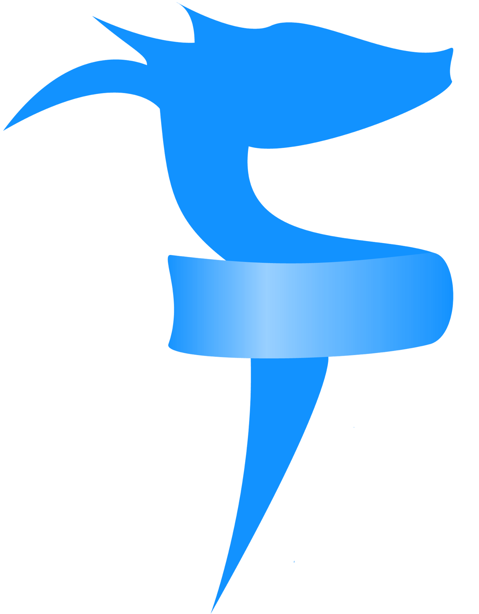
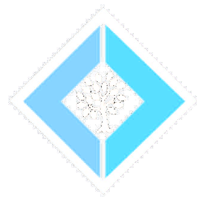

Full Stack Web
in F#
Tomasz Heimowski

@theimowski
Full Stack Web
TODO MVC
F#

- Microsoft origin, OSS
- General purpose
- Functional-first
- .NET / Mono / .NET Core / Web browser
- https://fsharp.org/

big picture
- Web stack
- Combines several OSS projects
- F# end-to-end
- Type-SAFE
- Cloud-ready
- Flexible
Prerequisites
- .NET SDK 2.2
- FAKE 5 (global dotnet tool)
- Node.js
- Yarn or NPM
or
Creating SAFE project
- Install SAFE template:
dotnet new -i SAFE.Template - Create project from template:
dotnet new SAFE - Build & run:
fake build --target run - Wait for build to finish: app opens up in browser

S for Saturn

- Web server
- ASP.NET Core, Kestrel

A for Azure
- Cloud provider


- Azure AppService
- Google Cloud AppEngine
- Google Cloud Kubernetes Engine
- IIS
- Docker
- Heroku

F for Fable
- F# to JavaScript compiler
- Babel JS

E for Elmish
- UI library
- Model - View - Update
practical benefits
- one language to rule them all
- after learning F# it's really easy to use!
- rich template with plenty options
- development experience taken to the next level
- Fable integrates nicely with JavaScript ecosystem
what's more?
- Sharing code between Server and Client
- Remote Devtools debugger
- Full Stack Debugging in VS Code
- Server-Side Rendering - Back-end React
What about Blazor?
Fable |
Blazor |
|
|---|---|---|
Language |
F# |
C# (Razor) |
Runtime |
JavaScript |
Web Assembly (Mono) |
Interop |
Directly (bindings) |
via JavaScript |
resources
- Docs - SAFE in a nutshell
- Deep dive demo from F# eXchange '18 (video)
-
GitHub SAFE Stack org
- dotnet template (>32K NuGet downloads)
- various sample apps
- Slides: https://theimowski.com/talk-full-stack-web-in-fsharp
- Source code: https://github.com/theimowski/SAFE-TodoMVC